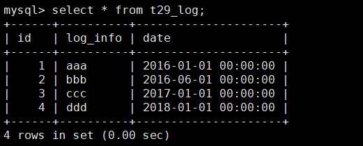
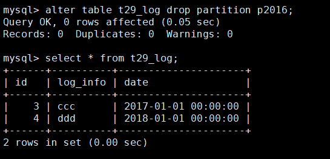

前言
为了防止单张表过大，很多情况下，我们需要对历史数据做归档或者删除操作。那么如何高效删除大量无用数据呢？今天就来总结一下。
在聊数据删除前，我们先来看看 MySQL 的共享表空间和独立表空间。
共享表空间和独立表空间
InnoDB 数据是按照表空间进行存放的，其表空间分为共享表空间和独立表空间。
共享表空间
共享表空间：表的数据放在系统共享表空间，也就是跟数据字典放一起。文件名为 ibdata1。可以通过参数 innodb_data_file_path 进行设置。在 my.cnf 中配置，如下：
1 | [mysqld] |
表示用两个文件（ibdata1 和 ibdata2）组成表空间，文件 ibdata1 的大小为 1G，文件 ibdata2 的大小为 1G，autoextend 表示用完 1G 可以自动增长。
独立表空间
独立表空间：每个 InnoDB 表数据存储在一个以 .idb 为后缀的文件中。
由参数 innodb_file_per_table 控制。
设置为 on 表示使用独立表空间；
设置为 off 表示使用共享表空间。
经验分享
一般情况下建议设置为独立表空间，原因是：如果某张表被 drop 掉，会直接删除该表对应的文件，如果放在共享表空间中，即使执行了 drop table 操作，空间还是不能回收。
基于上面的经验分享，因此建议使用独立表空间，而本节后面提到的几种删除数据的情况，都是基于独立表空间的情况。
几种数据删除形式
删除表
如果是某张表（假如表名为 t29）的数据和表结构都不需要使用了，那么可以考虑 drop 掉。出于安全考虑，建议的步骤如下：
- 1、首先将表名改为 t29_bak_20191011：
1 | alter table t29 rename t29_bak_20191011; |
- 2、然后等待半个月，观察是否有程序因为找不到表 t29 而报错；
- 3、如果没有跟表 t29 相关的报错，则半个月后直接 drop 掉 t29_bak_20191011：
1 | drop table t29_bak_20191011; |
清空表
如果是某张表（假如表名为 t29）的历史数据不需要使用了，要做一次清空，则可以考虑使用 truncate。
建议的步骤如下：
1、创建一张与 t29 表结构相同的临时表：
1 | create table t29_bak_20191011 like t29; |
2、并将数据拷贝到临时表：
1 | insert into t29_bak_20191011 select * from t29; |
3、再清空该表：
1 | truncate table t29; |
4、如果空间不够，观察半个月后，考虑转移 t29_bak_20191011 的数据到备份机器上。然后删除表 t29_bak_20191011：
1 | drop table t29_bak_20191011; |
经验分享
我不止一次遇到类似的情况：需要清空表而使用 delete from table_name，导致主从延迟和磁盘 IO 跑满的情况。 原因是 binlog 为行模式的情况下，执行全表 delete 会生成每一行对应的删除操作，因此可能导致单个删除事务非常大。而 truncate 可以理解为 drop + create，在 binlog 为 row 模式的情况下，也只会产生一行 truncate 操作。所以，建议清空表时使用 truncate 而不使用 delete。
非分区表删除部分记录
实际更多的情况，我们是需要删除表中一部分数据，在没有配置分区表的情况下，就只能用 delete 了。也许我们有时会发现，在 delete 很多数据后，实际表文件大小没变化。这是什么原因呢？
原因是，如果通过 delete 删除某条记录，InnoDB 引擎会把这条记录标记为删除，但是磁盘文件的大小并不会缩小。如果之后要在这中间插入一条数据，则可以复用这个位置，如果一直没有数据插入，就会形成一个 “空洞”。因此 delete 命令是不能回收空间的，这也是 delete 后表文件大小没变化的原因。
对于非分区表删除部分记录（比如删除 2017 年之前的数据，语句为：delete from table_name where date<‘2017-01-01’;），建议的步骤是：
- 1、首先备份全表；
- 2、确保 date 字段有索引，如果没有索引，则需要添加索引（目的是避免执行删除命令时，全表扫描）；
- 3、如果要删除的数据比较多，建议写一个循环，每次删除满足条件记录的 1000 条（目的是避免大事务），删完为止：
1 | delete from table_name where date<'2017-01-01' limit 1000; |
- 4、最后重建表（目的是释放表空间，但是会锁表，建议在业务低峰执行）：
1 | alter table table_name engine=InnoDB; |
或者：
1 | optimize table student; |
分区表删除部分分区
从 MySQL 5.1 开始，支持分区。MySQL 分区是指将一张表按照某种规则（比如时间范围或者哈希等），划分为多个区块，各个区块所属的数据文件是相互独立的。
比如对于一些日志表，我们可以创建成分区表，建表语句如下：
1 | use muke; |
在上表的分区表中，表示：
- 当日期的年份小于 2017 时，则数据存放在 p2016 分区；
- 当日期的年份大于等于 2017 小于 2018 时，则数据存放在 p2017 分区；
- 当日期的年份大于等于 2018 小于 2019 时，则数据存放在 p2018 分区。
对于分区表，其物理文件是由建立分区时的各个分区 idb 文件组成，如下：
这里写入几条数据：
1 | insert into t29_log select 1,'aaa','2016-01-01'; |
因为表 t29_log 是根据 date 来分区的，因此数据是根据 date 值的范围存放在不同的物理文件中，可以通过 information_schema 库下的 partitions 表来查看各个分区的具体信息：
1 | select TABLE_SCHEMA,TABLE_NAME,PARTITION_NAME,TABLE_ROWS from information_schema.partitions where table_schema='muke' and table_name='t29_log'; |

TABLE_ROWS 表示每个分区中的记录数。
我们查询下 t29_log 全表的数据：
1 | select * from t29_log; |

比如上面例子中 t29_log 需要删除 2016 年全年的数据，那么可以直接把 p2016 分区 drop 掉：
1 | alter table t29_log drop partition p2016; |

相对慢慢 delete，这种方式删除历史数据效率高很多。
因此，对于要经常删除历史数据的表，建议配置成分区表。以方便后续历史数据删除。
总结
本节首先提到了共享表空间和独立表空间，考虑到独立表空间的情况下，如果 drop 一张表，空间可以回收。因此一般建议设置为独立表空间。
如果要清空表，建议使用 truncate，而不使用 delete。
原因是 binlog 为行模式的情况下，执行全表 delete 会生成每一行对应的删除操作，因此可能导致单个删除事务非常大。而 truncate 可以理解为 drop + create，在 binlog 为 row 模式的情况下，也只会产生一行 truncate 操作。所以，建议清空表时使用 truncate 而不使用 delete。
本节提到了几种常见删除数据的情况，并提供了一些方法，其核心是删除前，需要备份数据。以防万一，另外就是尽可能的去避免删除数据时产生大事务。
考虑到非分区表删除部分记录会比较麻烦，因此如果知道某张表（比如日志类表）会进程删除几年前的数据，那么建议设置成分区表，删除历史数据将非常方便高效。
参考资料
https://dev.mysql.com/doc/refman/5.7/en/innodb-multiple-tablespaces.html
《MySQL 技术内幕：InnoDB 存储引擎》3.6.1 表空间文件、4.8 分区表

...
...
This is copyright.